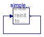

Simple steady state initialization of an FMU, together with a re-initialization of the state from the FMU at an event, leading to a linear system of equations over FMUs during initialization
With this test model the following properties are tested:
Extends from Modelica.Icons.ExamplesPackage (Icon for packages containing runnable examples).
| Name | Description |
|---|---|
| Reference solution in pure Modelica using exactly the same structuring as in Model WithFMUs | |
| Solution with FMUs | |
| For all models in this package an FMU must be generated |
 FMITest.Initialization.LinearSystems.SimpleInternalReinit.WithFMUsReference
FMITest.Initialization.LinearSystems.SimpleInternalReinit.WithFMUsReference
Reference solution in pure Modelica using exactly the same structuring as in Model WithFMUs

Extends from Modelica.Icons.Example (Icon for runnable examples).
FMITest.Initialization.LinearSystems.SimpleInternalReinit.WithFMUs
Solution with FMUs
Extends from Modelica.Icons.Example (Icon for runnable examples).